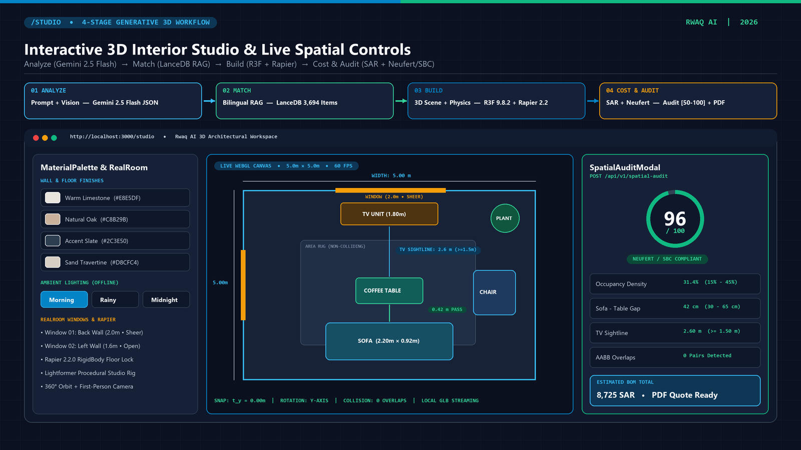
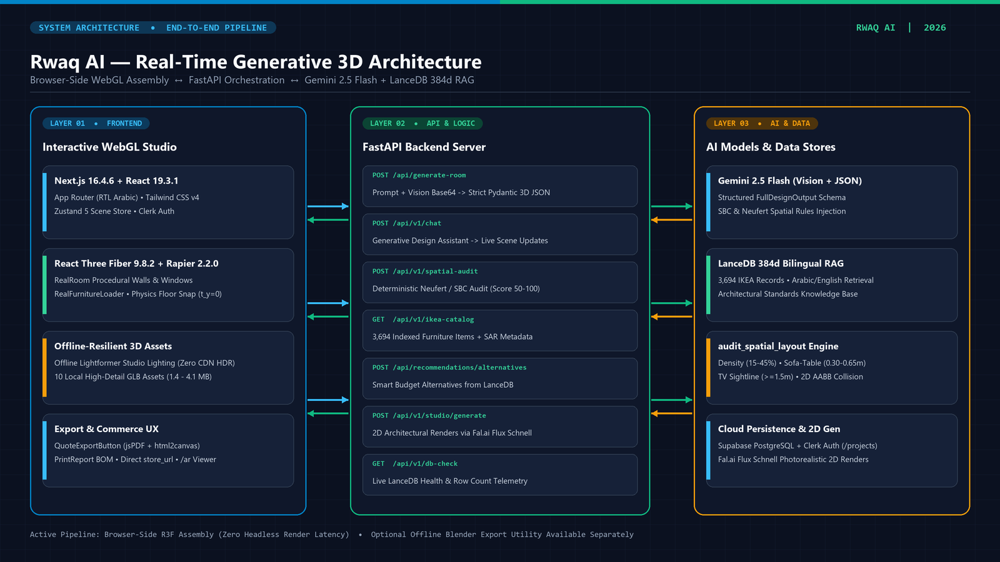
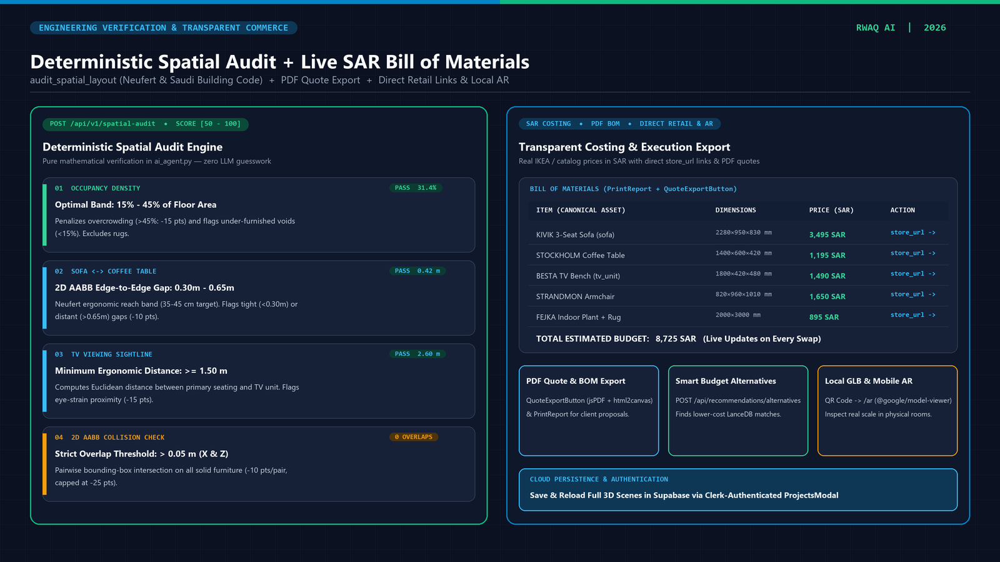
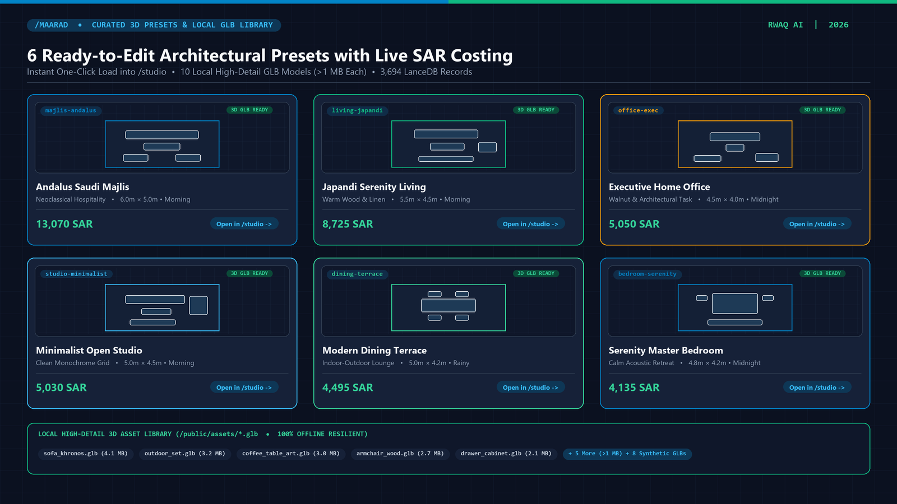

تحويل الأوصاف النصية والصور المرجعية إلى بيئات ثلاثية الأبعاد تفاعلية داخل المتصفح، مع تدقيق هندسي حتمي وفق معايير نيوفرت وكود البناء السعودي وتسعير حي بالريال السعودي.
فجوة حقيقية بين تصور العميل وواقع الأبعاد والخلوص والتكلفة قبل الشراء والتنفيذ
من الوصف النصي أو الصورة المرجعية إلى استوديو 3D تفاعلي وتدقيق هندسي وتسعير فوري بالريال

مسار عملي يبدأ من الفكرة النصية أو القوالب الجاهزة وينتهي بعرض سعر معتمد وتجربة تفاعلية
تجميع فوري داخل المتصفح بدون زمن رندرة خادمي + ذكاء توليدي وبحث متجهي ثنائي اللغة

تحقق رياضي دقيق من المعايير المعمارية (audit_spatial_layout) مقترن بعرض سعر فوري قابل للتنفيذ

رواق يجمع سرعة الذكاء التوليدي مع دقة التحقق الهندسي وواقعية التجميع ثلاثي الأبعاد
| المعيار التنافسي | مكاتب التصميم التقليدية | مولدات الصور بالذكاء (2D) | منصة رواق (Rwaq AI) |
|---|---|---|---|
| زمن التسليم والتعديل | من 3 إلى 14 يوماً لكل دورة | ثوانٍ (توليد صورة جديدة كل مرة) | ثوانٍ داخل المتصفح مع تعديل حي فوري |
| طبيعة المخرج البصري | لقطات ثابتة (2D Renders) | صورة مسطحة غير تفاعلية | مشهد 3D تفاعلي 360° + فيزياء Rapier + معاينة AR |
| الدقة الهندسية والتدقيق | مراجعة يدوية تعتمد على المصمم | لا يوجد (هلوسة أبعاد ومنظور) | تدقيق حتمي (audit_spatial_layout) بدرجة [50–100] |
| التسعير والربط التجاري | تسعير يدوي وبحث منفصل | غير متوفر (أثاث خيالي) | تسعير حي بالريال + روابط store_url + عرض سعر PDF وبدائل ميزانية |
6 قوالب ثلاثية الأبعاد مُسعّرة فعلياً بالريال كنقطة انطلاق، ضمن نموذج ربحي متعدد القنوات

منتج متكامل يعمل بالكامل اليوم مع مسار توسع واضح للسوق السعودي والإقليمي
منصة متكاملة تجمع التوليد الفوري، التدقيق الهندسي الحتمي، والتسعير الواقعي بالريال داخل المتصفح. جاهزون الآن للعرض الحي والإجابة على أسئلة لجنة التحكيم.